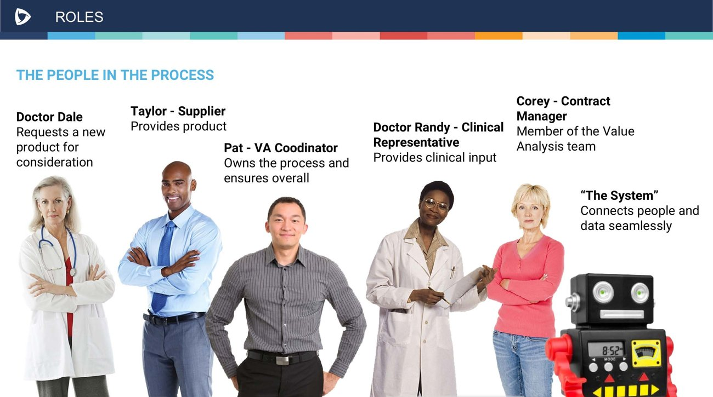
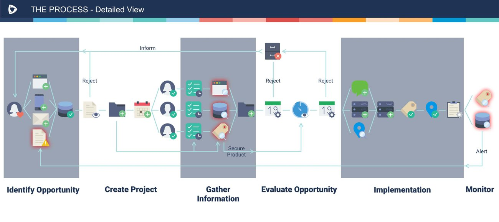
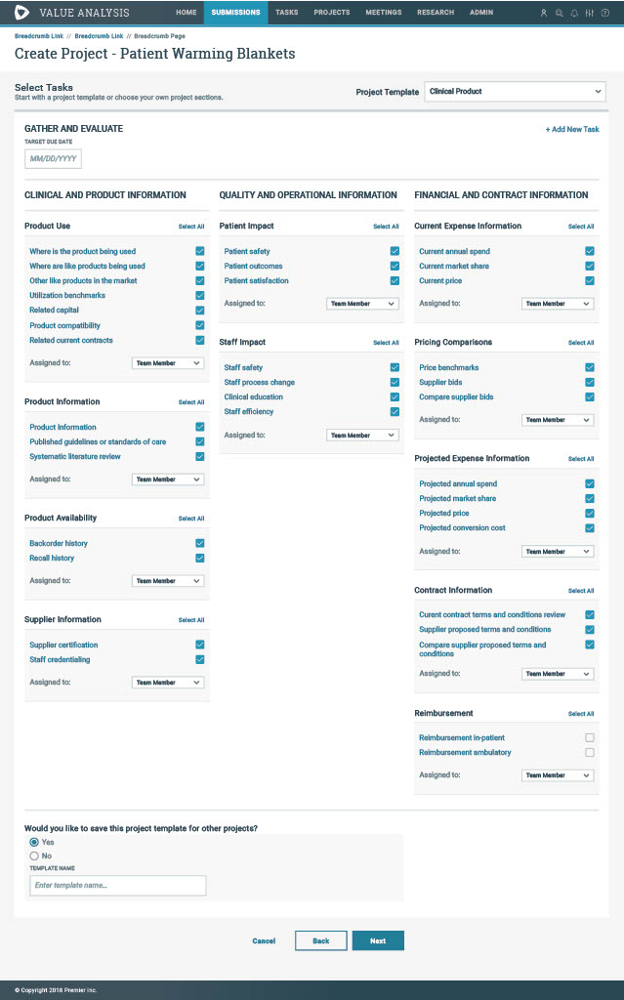
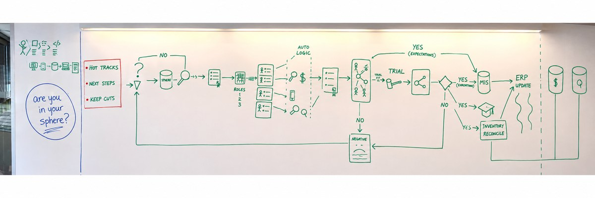
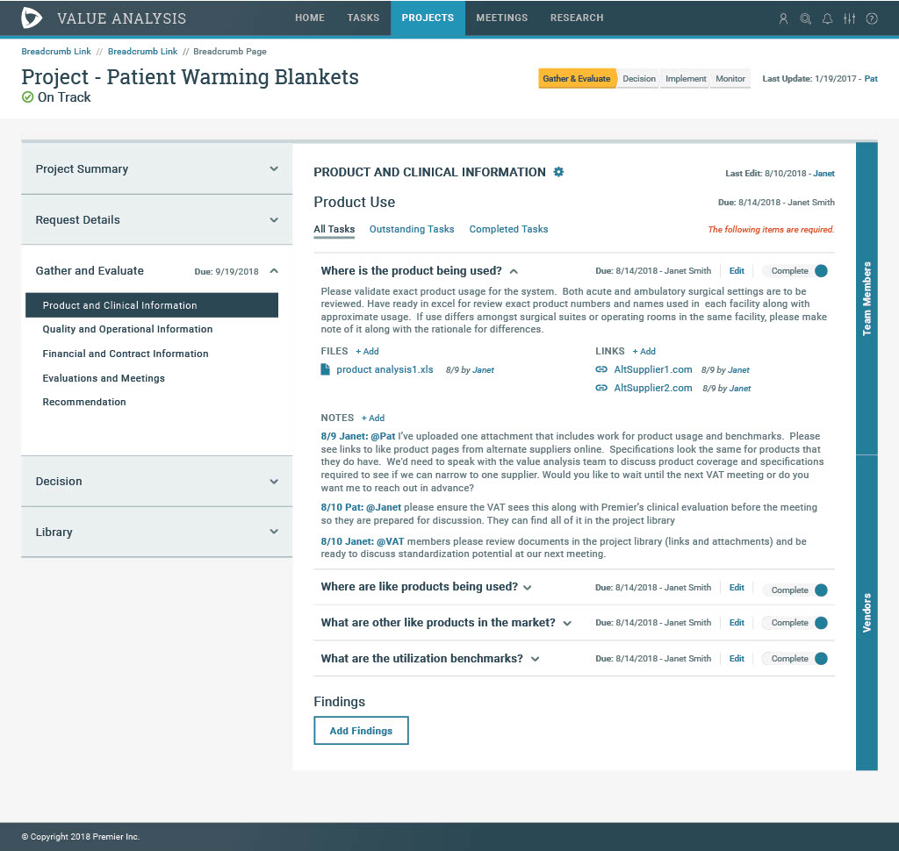
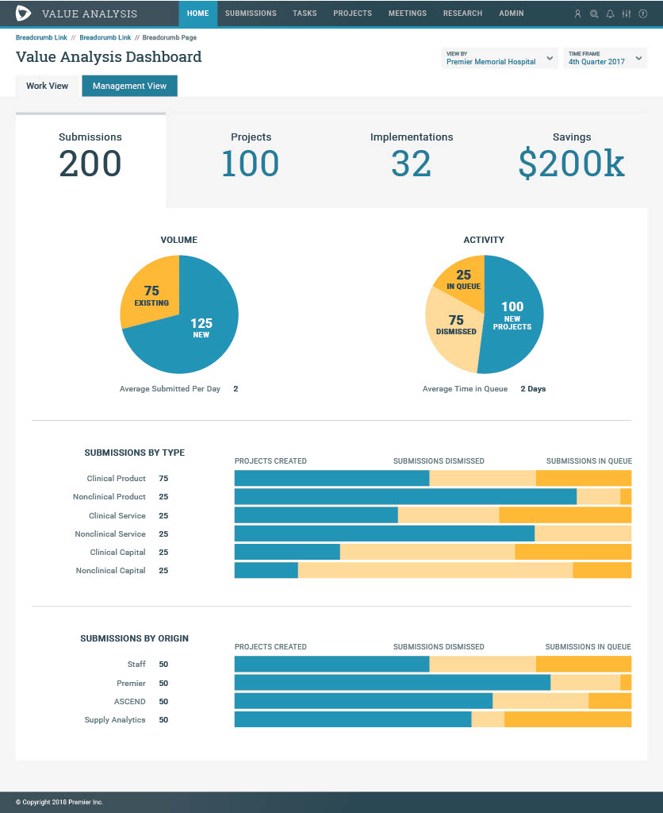

How a research-driven redesign helped a healthcare Value Analysis platform re-enter the market, cut administrative burden, and win back 83% of its former customers.
User research · Enterprise UX · Workflow & service design
83%
of targeted health systems converted back to the platform
50%
reduction in time to create a Value Analysis project
25%
reduction in time spent managing active projects
The challenge
Healthcare systems evaluate hundreds of medical products, services, and technologies every year — decisions that affect patient outcomes, clinician workflows, and millions of dollars in spend.
The organization's previous Value Analysis product had been deprecated, leaving customers to fall back on spreadsheets, email, and homegrown processes — many migrating to competing platforms in the meantime.
The task wasn't simply to rebuild the software. It was to rebuild trust with former customers while designing a modern platform flexible enough to support health systems that each swore their process was completely unique.
How might we create a standardized platform that supports highly variable hospital workflows, without forcing organizations to change how they operate?
That question became the foundation for every decision that followed.
My role
I led UX strategy end to end — from discovery through delivery — translating customer insight into product direction while balancing business goals with real clinical and operational constraints.
Planned and conducted user research
Facilitated stakeholder workshops
Synthesized research into personas and workflows
Defined information architecture
Designed low- and high-fidelity experiences
Partnered with Product on feature prioritization
Collaborated with Engineering through implementation
Led design reviews and sprint UX triage

01 — Mapping every role in the process, human and system, before designing a single screen
Understanding the problem
Rather than starting from feature requests, I wanted to understand how Value Analysis actually worked across different organizations — and whether the variation was as real as everyone believed.
Every health system believed they were a unique snowflake. My working hypothesis was that every snowflake is still made of water and frozen. My job was finding those universal truths.
That mindset shaped the entire discovery process. I planned and conducted research across six health systems representing three stages of Value Analysis maturity — 24 in-depth interviews, stakeholder workshops, workflow mapping, and persona validation sessions.
Beyond gathering requirements, involving customers early helped rebuild confidence after the previous solution's retirement. Participants became collaborators, validating concepts throughout the process rather than only reacting to finished designs.
01
Insight
No single source of truth
Teams relied on spreadsheets, email, shared drives, PDFs, and meeting notes. Even answering "where are we?" meant searching multiple systems.
Design response
Create a centralized project workspace containing every artifact needed across the Value Analysis lifecycle.
02
Insight
Duplicate work was widespread
Organizations frequently re-evaluated products already reviewed. No historical visibility meant duplicated effort and inconsistent decisions.
Design response
Surface similar historical projects during intake so teams can reuse past evaluations before starting new work.
03
Insight
Success was unmeasurable
Realized savings lived in separate systems entirely, disconnected from the evaluations that produced them — leadership couldn't see what worked.
Design response
Integrate value tracking directly into projects, connecting recommendations to organizational impact.
From research to strategy
One of the most valuable outcomes of research wasn't a feature — it was a reframed product strategy.
Early pressure pushed toward supporting every variation of every customer's workflow. But the interviews revealed something different: while terminology and governance varied considerably, every organization followed the same underlying lifecycle — Intake → Evaluation → Committee Review → Decision & Implementation → Value Tracking.
Rather than designing dozens of custom workflows, I proposed a configurable framework built around this common lifecycle — shifting the product from a collection of custom screens into a scalable enterprise platform.

02 — The six-stage lifecycle every health system shared, mapped end to end with its decision and reject paths
The journey, stage by stage
Six roles moving one evaluation through the shared lifecycle every health system turned out to follow — and where the redesigned platform removed friction at each handoff.
Dr. Dale — requesting clinicianPat — VA CoordinatorTaylor — SupplierDr. Randy — clinical committeeCorey — Contract Manager
Scroll to follow the full journey →
01
Intake
Identify Opportunity
Dr. Dale
Spots a need for a new product, service, or technology and submits a request to Value Analysis.
BeforeNo way to know if this was already evaluated — every request starts from zero.
NowDuplicate-project detection surfaces similar historical projects right at intake.
→
02
Intake
Create Project
Pat
Reviews the request, picks a configurable template, and assigns tasks to owners across clinical, quality, and financial workstreams.
BeforeNo single source of truth — teams, tasks, and approvals scattered across spreadsheets and email.
NowThree configurable templates standardize the framework, not the customer.
→
03
Evaluation
Gather Information
PatTaylorDr. RandyCorey
Owners complete clinical, quality, and contract sub-tasks — uploading files and vendor docs, discussing in threaded notes.
BeforeAnswering "where are we?" means searching multiple systems and chasing people by email.
NowOne unified workspace holds evidence, files, and team discussion together.
→
04
Committee Review
Evaluate Opportunity
Dr. RandyPat
The VAT committee reviews compiled evidence at a scheduled meeting against clinical and financial criteria.
BeforeNo at-a-glance status ahead of meetings — low visibility into what's ready.
NowA dashboard surfaces submissions, stage indicators, and upcoming VAT meetings in one view.
→
05
Decision
Decide & Implement
CoreyPat
Committee approves, rejects, or requests more info; on approval, Corey finalizes contract terms and the team executes rollout.
BeforeHandoff from decision to execution was easy to drop; reject loops weren't tracked anywhere.
NowDecisions and rationale live in the same record as the evidence — implementation stays visible.
→
06
Value Tracking
Monitor
PatLeadership
The team connects the completed evaluation to realized savings and operational impact, reviewed quarterly by leadership.
BeforeSuccess was unmeasurable — realized savings lived in systems disconnected from the evaluation itself.
NowIntegrated value tracking connects recommendations directly to organizational impact.
Reject & inform loops: at Committee Review and Decision, a project can loop back to Gather Information for more evidence, or close as rejected — both paths are now visible in the shared workspace instead of disappearing into email.
Designing for flexibility
Project creation was the most complex workflow — every organization required different teams, approvals, vendor requests, documentation, and review steps.
A fully configurable workflow builder was on the table, but it would have significantly increased implementation complexity and delayed launch. Instead, I designed three configurable project templates that organizations could customize and save as reusable starting points — balancing flexibility with implementation simplicity while leaving room for future scale.

03 — Configurable templates: teams pick a starting template, then customize which tasks apply and who owns each one
Wireframing & iteration
Every major workflow was designed before visual design began — 74 wireframes across 14 major and minor iterations.
Each cycle followed the same pattern: research → prototype → stakeholder review → iteration. We weren't validating interfaces — we were validating decisions. Does this reduce cognitive load? Can users understand project status at a glance? Are we supporting different organizational workflows without adding complexity? What information is actually necessary to complete this task?
Those conversations frequently changed the design before a single line of code was written.

04 — Early whiteboarding: mapping decision logic, roles, and system handoffs before a single wireframe existed
The solution
A flexible platform designed around decision-making — reducing administrative work while improving transparency across the Value Analysis process.
05 — The dashboard: every open request, active project in one view
Unified project workspace
Clinical evidence, financial analysis, vendor documentation, discussion history, approvals, and final decisions — one place, one source of truth, so no one searches multiple systems to understand where a project stands.
Configurable templates
Teams, tasks, vendor requests, and required documentation customized once and reused across future projects. Standardize the framework — not the customer.
Duplicate project detection
Historical projects surface during intake, so teams reuse prior evaluations before starting new work — reuse knowledge before creating it again.
Integrated value tracking
Projects no longer end at committee approval. Teams connect completed evaluations to realized value, giving leadership visibility into what actually worked.

06 — Inside a project: tasks, files, and threaded team discussion live next to the decision they inform

07 — Value tracking: recommendations connected to the outcomes they were meant to produce
Collaboration & leadership
Delivering this required balancing customer expectations, business objectives, and technical constraints in real time.
I facilitated stakeholder workshops, presented research findings to leadership, partnered with Product Management to prioritize opportunities, and worked closely with Engineering to weigh implementation tradeoffs. Rather than advocating for features, I consistently grounded design conversations in research findings and user goals — using customer feedback to resolve competing stakeholder perspectives.
Business impact
The redesign delivered on both business and user outcomes — and, beyond the metrics, re-established the platform's credibility in a market it had once ceded to competitors.
Outcome
Result
Customer conversion
83%
Time to create a VA project
50% faster
Time managing active projects
25% faster
Customer adoption
All but one targeted health system subscribed
Reflection
This project changed how I think about enterprise healthcare software.
Early in discovery, every organization insisted their process was unique. Had we designed around every exception, we'd have built an overly complex product that was difficult to maintain and implement. Instead, research showed that while terminology and governance differed, the underlying decision-making process remained remarkably consistent — and that insight shifted our approach from designing custom workflows to designing configurable systems.
The goal isn't to simplify healthcare — it's to simplify how people navigate its complexity.
Research creates alignment
Interviews weren't just requirements-gathering — they built trust with customers and unified internal teams around real user needs.
Design systems extend beyond UI
Consistent workflows and reusable templates created a scalable product architecture that supported diverse customer needs.
Enterprise UX balances flexibility and consistency
The most effective solution wasn't unlimited customization — it was a configurable framework grounded in shared user behaviors.
Business outcomes follow thoughtful design
Connecting research insight to specific product changes reduced administrative effort, improved efficiency, and helped the platform re-enter a competitive market.